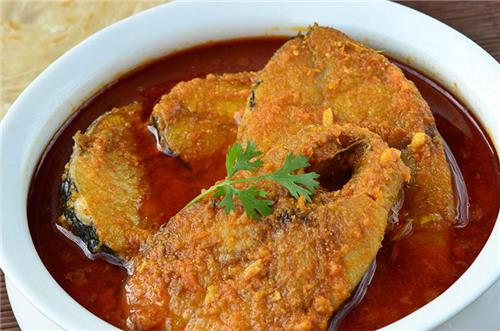
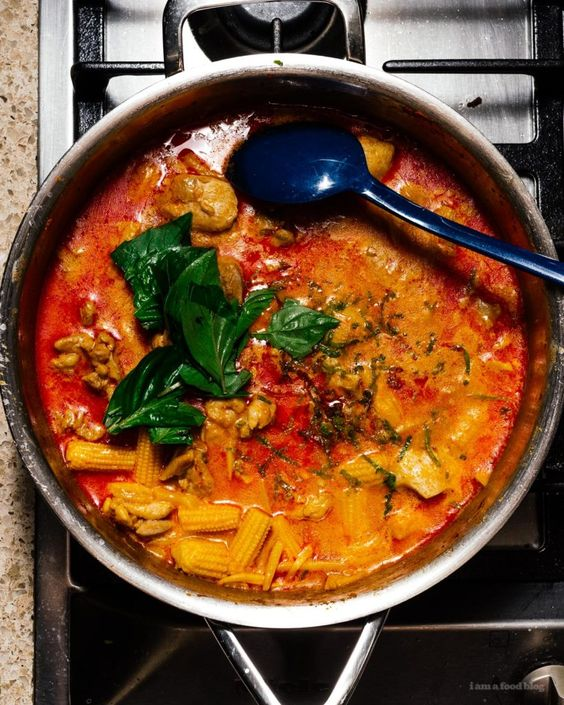
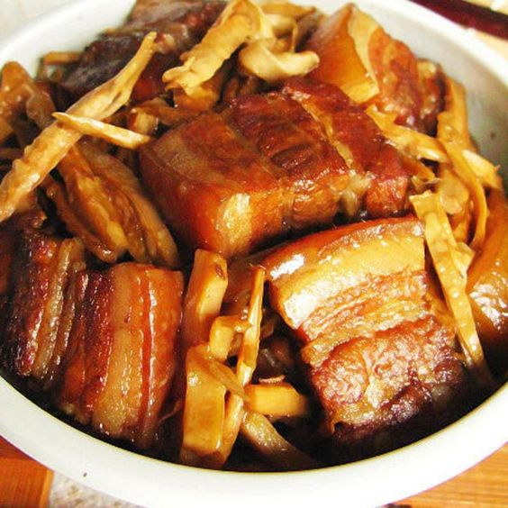

Famous Foods of Tripura
Mui Borok

Mui Borok Recipe:
- Ingredients:
- 1 cup rice
- 1/2 cup split urad dal (black gram)
- 1/2 teaspoon turmeric powder
- 1 tablespoon ginger-garlic paste
- 2 green chilies, chopped
- 1 onion, chopped
- 1 tablespoon oil
- Salt to taste
- Instructions:
- Wash and soak rice and urad dal for a few hours.
- Drain and grind them together with turmeric powder to form a smooth batter.
- Heat oil in a pan, add onions, ginger-garlic paste, and green chilies. Sauté until onions are golden.
- Add the batter to the pan and cook until it thickens and the oil separates.
- Season with salt and serve hot with rice or as a side dish.
Bamboo Shoot Curry

Bamboo Shoot Curry Recipe:
- Ingredients:
- 1 cup bamboo shoots, sliced
- 1 onion, chopped
- 2 tomatoes, chopped
- 1 tablespoon ginger-garlic paste
- 1 tablespoon curry powder
- 1/2 teaspoon turmeric powder
- 1 tablespoon oil
- Salt to taste
- Chopped coriander for garnish
- Instructions:
- Heat oil in a pan and sauté onions until translucent.
- Add ginger-garlic paste and cook until fragrant.
- Add tomatoes and cook until they break down.
- Add curry powder, turmeric powder, and salt. Cook for a minute.
- Add bamboo shoots and mix well. Cook until tender.
- Garnish with chopped coriander and serve with rice or roti.
Pork with Bamboo Shoot

Pork with Bamboo Shoot Recipe:
- Ingredients:
- 500g pork, thinly sliced
- 200g bamboo shoots, sliced
- 2 tablespoons soy sauce
- 1 tablespoon oyster sauce
- 2 tablespoons vegetable oil
- 3 cloves garlic, minced
- 1 inch ginger, minced
- 1 bell pepper, sliced
- Salt and pepper to taste
- Fresh coriander for garnish
- Instructions:
- Heat oil in a pan and sauté minced garlic and ginger until fragrant.
- Add the pork slices and cook until browned.
- Add bamboo shoots and bell pepper, stir-frying for a few minutes.
- Pour in soy sauce and oyster sauce, mixing well. Cook until everything is heated through.
- Season with salt and pepper to taste. Garnish with fresh coriander before serving.